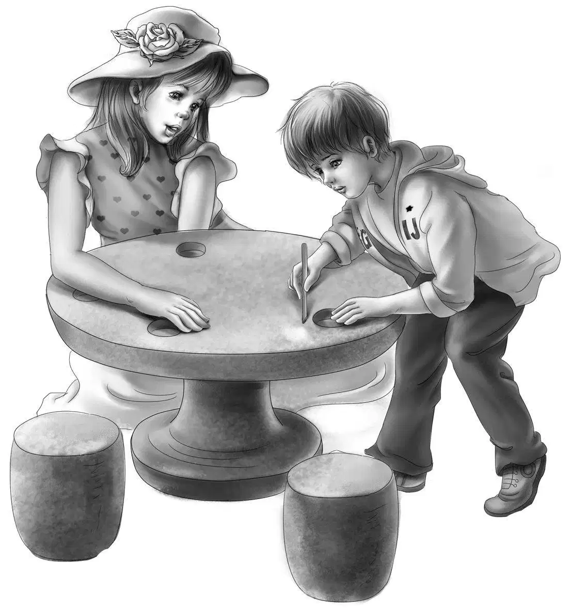
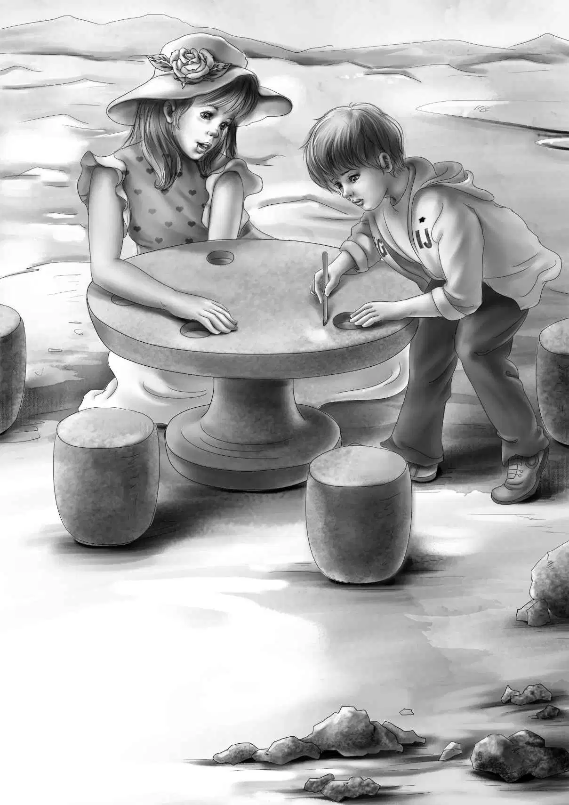

Jessie boiled a dozen eggs and a dozen potatoes.She put them in the refrigerator.By noon she had made an enormous potato salad.She had bought rolls and butter and a cherry pie.
"Let's eat lunch out on the rocks," she said."It's too hot in the lighthouse.You carry the salad,Henry.And,Benny,you carry the cherry pie and the knife."
They found a fine seat for Grandfather that just fitted him."Really,this is an easy chair," he said,"made out of rocks."
The other seats were not so easy.The rocks were sharp.The table was not very flat either.
"I have an idea," shouted Benny suddenly."Let's find stones and make five easy chairs.Then build up the table with a flat stone.And then get some cement and fill in the cracks."
"A wonderful idea,Ben," said Henry."A small bag of cement would be enough.We've got plenty of sand."
"I saw a place where they had cement," said Violet."Some men were building a driveway."
"Where?" asked Benny.
"Well,don't you remember when we came from Aunt Jane's there was a big new gas station where some men were building a driveway?"
"I remember it," said Mr.Alden."It was right beside a little fish market."
"Let's go the minute lunch is over," said Benny.
"Lunch is over for me right now," said Mr.Alden.He ate the last of his cherry pie."The ocean will wash away the crumbs."
Jessie and Henry picked up all the dishes and washed them in the sea.Then Henry backed the car out and they all went down to the little fish market.Sure enough,the men were at work on the driveway.Bags of cement were lying around.
"Where can we buy some cement?" asked Henry,stopping the car.He put his head out of the window.
"How much do you want?"asked the man who was the foreman.
"Well,we want to make some seats and a table down on the rocks by the lighthouse.How much would you think we'd need?"
"Take this small bag,"said the foreman."Bring back what you don't want."
Henry said,"Is it three parts of sand to one part of cement?"
"Right," said the foreman."You can borrow this hoe if you want."
"That's neat!" cried Benny."I'll hoe!"
"Wish I could come and help you," said the man,smiling.He looked at the laughing family.They all laughed again.Henry lifted the bag into the car,and Benny took the hoe.
"I'll put the cement on Violet's feet," said Henry.But he was joking.
Then the Aldens noticed that one of the men was staring at them with big,black eyes.It was the same man who had almost bumped into Jessie.
When he saw that they knew him,the man turned his back and began to work again.
After they had driven away,Jessie could not help saying,"That was odd seeing that man again." Everyone agreed.
"Stop at the store,Henry,and buy a trowel," said Grandfather."You'll have to smooth the cement and carry it to the rocks."
When the Aldens got back to the lighthouse they went to the rocks at once.The only seat which was comfortable already was Mr.Alden's.They walked around trying to find big rocks of the right shape.Benny sat down on every seat he could find to try it.Then the boys began to carry big stones and the girls took the little stones to fill the cracks.At last they had five seats around a fine table.
Henry began to mix the cement."Not with salt water," he said."We must have fresh water."
He found a big rock that was shaped like a tub.He mixed the cement in that.
"Now let me hoe it,Henry," begged Benny."I know just how to do it.I watched the men."
"Don't mix up too much at first," said Jessie."It will get hard before we finish all the seats."
"Isn't this fun?" cried Benny,hoeing away."Just like making mud pies.Let's do Violet's seat first.She has such a comfortable looking chair already." So they carried the cement in a newspaper and Benny plastered the seat and smoothed it with the trowel.
"Isn't that wonderful!" said Violet."I'd love to try it."
"Better not," said Henry."Let it dry overnight."
Then Jessie and Henry took turns with the trowel,and at last they all helped Benny with his own seat and the table.
"Let's make places for cups on the table," said Violet.So when the cement on the table was soft and smooth she pressed a cup into it in five places.The mark made a wonderful saucer.The cup could not fall off.
"Plates,too!" said Benny.
With a stick he drew B for Benny,J for Jessie,V for Violet,H for Henry,and G for grandfather beside the plates.
The cement was almost gone,but they took the bag back to the workmen and Henry paid the foreman for it.He gave back the hoe.They noticed that the black-eyed man was not there.

"I'm glad," said Benny as they drove back,"I don't like him anyway."
"I wonder who he is," said Mr.Alden.
It was not too long before he found out.